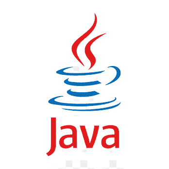

What is Computer Programming
Computer Programming is a step by step process of designing and developing various sets of computer programs to accomplish a specific computing outcome. The process comprises several tasks like analysis, coding, algorithm generation, checking accuracy and resource consumption of algorithms, etc. The purpose of computer programming is to find a sequence of instructions that solve a specific problem on a computer. Computer programming is a way of giving computers instructions about what they should do next. These instructions are known as code, and computer programmers write code to solve problems or perform a task. Computer Programming is very easy if it is appropriately managed. There are many computer programming languages available so finalizing the right programming language is not an easy task.
Three good reasons for learning programming:
- Programming helps you understand computers. The computer is only a tool. If you learn how to write simple programs, you will gain more knowledge about how a computer works.
- Writing a few simple programs increases your confidence level. Many people find great personal satisfaction in creating a set of instructions that solve a problem.
- Learning programming lets you find out quickly whether you like programming and whether you have the analytical turn of mind programmers need. Even if you decide that programming is not for you, understanding the process certainly will increase your appreciation of what programmers and computers can do.
What Programmers do:
In general, the programmer's job is to convert problem solutions into instructions for the computer. That is, the programmer prepares the instructions of a computer program and runs those instructions on the computer, tests the program to see if it is working properly, and makes corrections to the program. The programmer also writes a report on the program. These activities are all done for the purpose of helping a user fill a need, such as paying employees, billing customers, or admitting students to college.
The programming activities just described could be done, perhaps, as solo activities, but a programmer typically interacts with a variety of people. For example, if a program is part of a system of several programs, the programmer coordinates with other programmers to make sure that the programs fit together well. If you were a programmer, you might also have coordination meetings with users, managers, systems analysts, and with peers who evaluate your work-just as you evaluate theirs.
What is a programming Language

A programming language is a set of commands, instructions, and other syntax use to create a software program. Languages that programmers use to write code are called "high-level languages." This code can be compiled into a "low-level language," which is recognized directly by the computer hardware. A programming language is mainly used to develop desktop applications, websites, and mobile applications.
Types of Programming Language
1. Low-level programming language
Low-level language is machine-dependent (0s and 1s) programming language. The processor runs low- level programs directly without the need of a compiler or interpreter, so the programs written in low-level language can be run very fast. There are two types of low-level programming language:
- Machine Language: Machine language is a type of low-level programming language. It is also called as machine code or object code. Machine language is easier to read because it is normally displayed in binary or hexadecimal form (base 16) form. It does not require a translator to convert the programs because computers directly understand the machine language programs. It executes faster than high-level language.
- Assembly Language: An assembly language contains a list of basic instructions and is much more difficult to read than a high-level language. In rare cases, a programmer may decide to code a basic program in an assembly language to ensure it operates as efficiently as possible. An assembler can be used to translate the assembly code into machine code. It is designed for specific processors. It requires less memory and less execution time to execute a program.
2. High-level programming language
High-level programming language (HLL) is designed for developing user-friendly software programs and websites. This programming language requires a compiler or interpreter to translate the program into machine language (execute the program). It is easy to read, write, and maintain. High-level programming language includes Python, Java, JavaScript, PHP, C#, C++, Objective C, Cobol, Perl, Pascal, LISP, FORTRAN, and Swift programming language. There are three types of high-level language:
- Procedural Oriented programming language: Procedural Oriented Programming (POP) language is derived from structured programming and based upon the procedure call concept. It divides a program into small procedures called routines or functions. Procedural Oriented programming language is used by a software programmer to create a program that can be accomplished by using a programming editor like IDE, Adobe Dreamweaver, or Microsoft Visual Studio. it helps programmers to easily track the program flow and code can be reused in different parts of the program. Examples include: C, FORTRAN, Basic, Pascal, etc.
- Object-Oriented Programming language: Object-Oriented Programming (OOP) language is based upon the objects. In this programming language, programs are divided into small parts called objects. It is used to implement real-world entities like inheritance, polymorphism, abstraction, etc in the program to makes the program resusable, efficient, and easy-to-use. OOP is faster and easier to execute, maintain, modify, as well as debug. Examples include: C++, Java, Python, C#, etc.
- Natural language: Natural language is a part of human languages such as English, Russian, German, and Japanese. It is used by machines to understand, manipulate, and interpret human's language. It is used by developers to perform tasks such as translation, automatic summarization, Named Entity Recognition (NER), relationship extraction, and topic segmentation. It helps users to ask questions in any subject and directly respond within seconds.
3. Middle-level programming language
Middle-level programming language lies between the low-level programming language and high-level programming language. It is also known as the intermediate programming language and pseudo-language. It supports the features of high-level programming, it is a user-friendly language, and closely related to machine language and human language. Examples include: Example: C, C++, language
Main features of a programming language
- Simplicity: the language must offer clear and simple concepts that facilitate its learning and application, in a way that is simple to understand and maintain. Simplicity does not mean that it can be subtracted from the optimal power of functioning.
- Naturalness: this means that its application in the area for which it was designed must be done naturally, providing operators, structures and syntax for operators to work efficiently.
- Abstraction: it is the ability to define and use complicated structures or operations while ignoring some details, which influences writing ability.
- Efficiency: Programming languages must be translated and executed efficiently so as not to take up too much memory space or require too much time.
- Structuring: the language allows programmers to write their codes according to structured programming concepts, to avoid creating errors.
- Compactness: with this characteristic, it is possible to express operations concisely, without having to write too many details.
- Locality: refers to the codes concentrating on the part of the program with which you are working at a given time.
Most popular programming languages
There are tons of programming languages out there that allow you to do all sorts of things, from building virtual reality experiences to creating video games and more. In this section, we’ll break down some of the most popular programming languages — and what they’re used for. They include:
i. Python

Python is one of the most widely used user-friendly programming languages. It is an open-source and easy to learn programming language developed in the 1990s. It can be used in a variety of fields from data science and machine learning to web development and is a great first language to learn. Python is platform-independent means you can write code once and run it anywhere.
ii. Java
Java is a simple, secure, platform-independent, reliable, architecture-neutral high-level programming language developed by Sun Microsystems in 1995. Now, Java is owned by Oracle. Java can be used for many things, including mobile applications, software development, and large systems development. It is capable of performing multiple tasks at the same time.
iii. JavaScript
JavaScript is a type of scripting language that is used on both client-side as well as a server-side. It is developed in the 1990s for the Netscape Navigator web browser. It allows programmers to implement complex features to make web pages alive. It helps programmers to create dynamic websites, servers, mobile applications, animated graphics, games, and more. It can be used to decrease the loading time from the server.
iv. C#

C# (pronounced as C sharp) is a modern, general-purpose, and object-oriented programming language used with XML based Web services on the .NET platform. It is mainly designed to improve productivity in web applications. It can be used for a wide variety of applications, including game development, enterprise software, video games, mobile apps, and more. C# is a modern, type-safe, easy, fast, and open-source programming language that is easily integrated with Windows.
v. C++

C++ is one of the thousands of programming languages that we use to develop software. C++ programming language is developed by Bjarne Stroustrup in 1980. It is similar to the C programming language but also includes some additional features such as exception handling, object-oriented programming, type checking, etc. It provides high-level abstraction and useful for a low-level programming language, and more efficient for general-purpose. It is used in a wide range of industries, including VR, software and game development, robotics, and scientific computing.
vi. PHP
PHP stands for Hypertext Preprocessor. It is an open-source, powerful server-side scripting language mainly used to create static as well as dynamic websites. It is developed by Rasmus Laird in 1994. Inside the php, we can also write HTML, CSS, and JavaScript code. To save php file, file extension .php is used. PHP is a more secure and easy-to-use programming language. choice if you’re interested in building dynamic web applications and works well with databases and HTML.
vii. R
Currently, R programming is one of the popular programming languages that is used in data analytics, scientific research, machine learning algorithms, and statistical computing. It is developed in 1993 by Ross Ihaka and Robert Gentleman. It helps marketers and data scientists to easily analyze, present, and visualize data. It is an open-source and platform-independent programming language.
viii. Swift
Swift is Apple’s programming language and is a must if you plan to develop applications for iOS and MacOS.
ix. Kotlin

Kotlin is an open-source programming language developed by JetBrains. It’s popular for web development, Android development, and more.
x. Ruby

Ruby is an open-source, general-purpose, and pure object-oriented programming language released in 1993. It is used in front-end and back-end web development. It is mainly designed to write CGI (Common Gateway Interface) scripts. It is used to develop both internet as well as intranet applications. The code written in Ruby is small and contains less number of lines.
How to choose a programming language
Multiple programming languages can help you solve the same programming problem. However, you need to select a language that you feel is relevant to perform your task. If you decide that a language does not suit your business requirement, you can always move on to a new language. Your skill in the chosen language will also be a deciding factor. Expected software system response time, a number of simultaneous users, security, maintains, compatibility with web, mobile, devices are few other factors to consider while choosing a language.